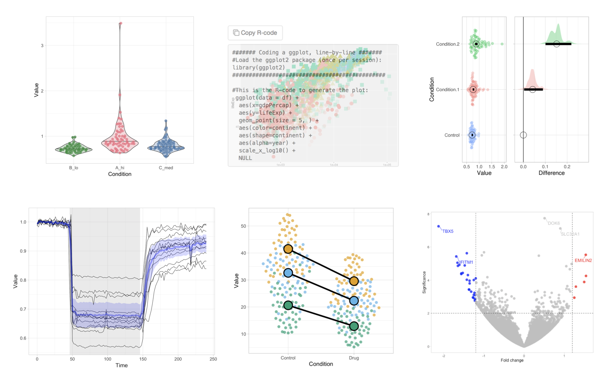
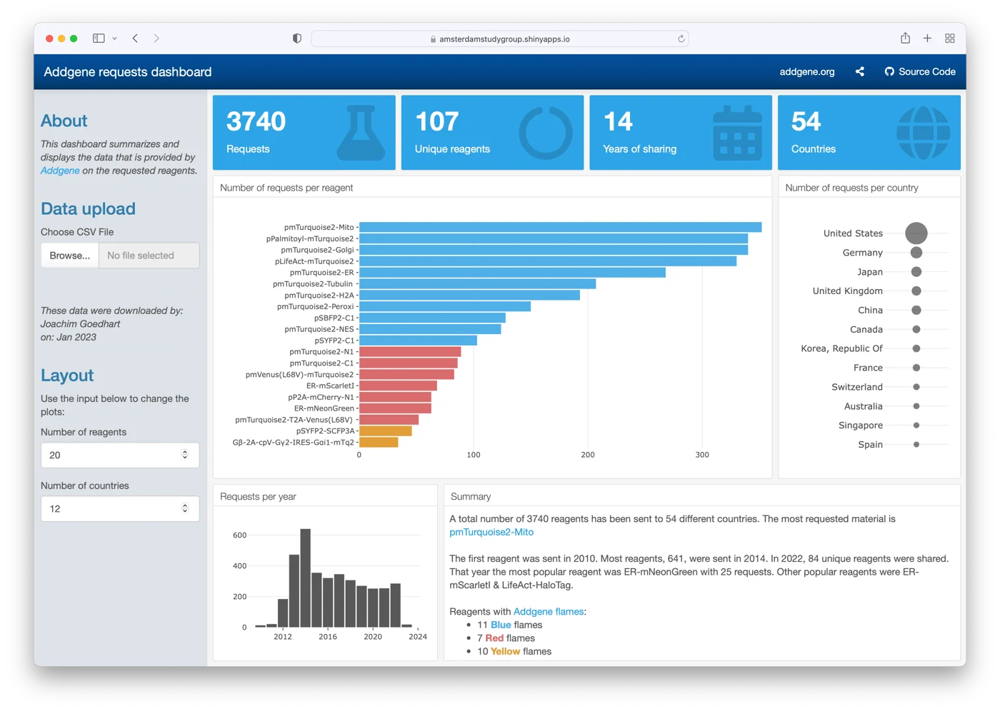
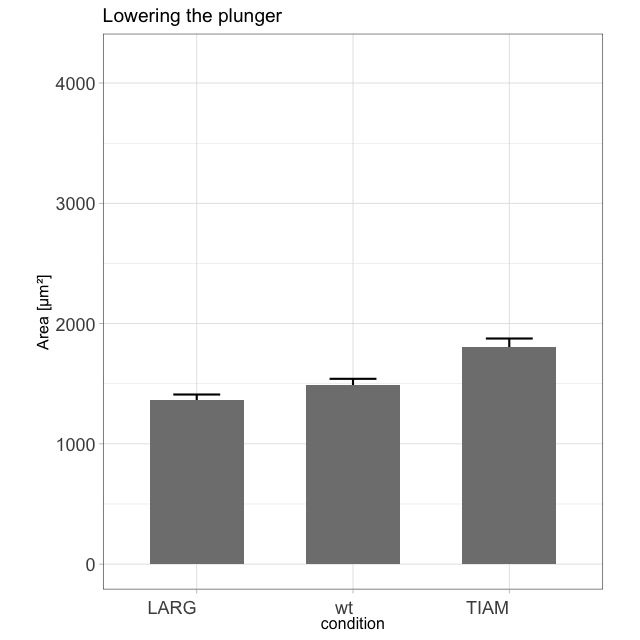
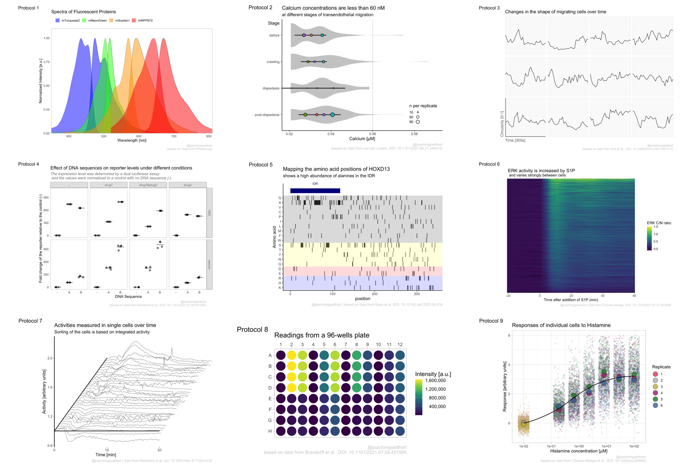

Tools
We generate a variety of tools (plasmids, code, dashboards, apps) that we share. It is very valuable for us to know how/where/when (and when not) these tools work in the hands of others. Therefore, we appreciate any feedback, suggestions or questions. Feel free to contact me and share your thoughts!
Below you will find an overview of the different resources and tools that we have developed.
Plasmids
We generate a large number of genetically encoded proteins and biosensors. The advantage of these DNA encoded tools is that they can be easily shared as plasmids. We deposit the most relevant (and popular) plasmids that are generated at the Section of Molecular Cytology at addgene. The benefit is that the plasmids are (generally) fully sequence verified. If you are interested in any of our plasmids, I encourage you to check the addgene website where the plasmids are organized by article:
Apps & code
Data visualization is a key step in data exploration and also important for the interpretation and presentation of results. To simplify data visualization and to encourage the transparent presentation of data, we have generated a number of web apps. These online apps implement state-of-the-art data visualization methods in a user-friendly way and are open source and freely accessible. Several of the apps have been published and it is advised to read the accompanying papers to learn how the apps can be used (you can find this information under the ‘About’ tab of each web app). The example output of the apps should give you some idea of what kind of figures you can make:

The apps are open-source and freely accessible at https://huygens.science.uva.nl/, or alternatively through this site.
The code and scripts that we generate for our research and education are available at Github. Most of the code deals with data Visualization.
Dashboards
A dashboard can be an elegant and interactive platform to share data (instead of the useless statement ‘data available upon request’). We have generated a couple of interactive dashboards, using either {shiny} or the {flexdashboard} package.
The polarVolcaNoseR app was developed in {shiny} in collaboration with Román González Prieto to share research data in an accessible way. You will find more information in the accompanying paper.
Another example is a dashboard that can be used to show how many plasmids have been shared with the community via addgene. This dashboard is made with the {flexdashboard} package. Users can upload their plasmid request data and visualize the stats on a dashboard that is available here. Background information on the purpose and development in this blog.

Tutorials & Blogs
I enjoy blogging about a variety of topics that are related to our research. It all started when I realized that transparency in data presentation (by showing the data) is crucial. This was - at that time - not common (and the number of tools to present data in a clear way was )partially because of a lack of good tools). To make my point that showing the data is important, I generated this animation of exploding barplots (you can make one with your own data with this script):

The blogs that I have written are posted on different platforms and deal with statistics, data visualization and Fluorescent Protein technology. Here’s an overview of all of my blogs.
DataViz protocols
The Shiny apps allow user-friendly and fast visualization of data. Despite a lot of flexibility, the options are still limited. To have full reproducibility, control and flexibility over the data visualization, coding is necessary. I have detailed some of the steps (with code) to analyze and plot data with R/ggplot2 in blogs. To gather this information in a central and structured way, I have generated an online resource (or book, if you will) with DataViz protocols. This is a living document that will be updated whenever a new dataViz protocol is ready. If you have suggestions, please let me know! Here is a selection of the different data visualizations that are covered by a protocol:
